專門收 TVC/CM：一條片一張 card，保留 transcript、OCR、storyboard 截圖；不混入 award/campaign case 庫 · 更新 2026-07-01 09:02 HKT · 14 clips
oricon — かたせ梨乃&JO1 豆原一成、新郎新婦姿で腕組みエスコートを披露！ 「夫婦と16歳〜狂気の隣人〜」記者会見
2026-07-01 · 1486s · 17 frames · local evidence
品牌/生活TVC/CM · frame samplingTVC/CM AdWatch
本作のサブタイトル狂器の臨人にみましてキャストの皆様には狂気的に愛して病止まないものを事前にフリップにお書きいただきました。ということで、今フリップ入れさせていただきますね。そして順番に発表していただければと思います。ではまずは片瀬さんからお願いいたします。
じゃん。
シャンパニ。シャンパンです。シャンパン。
1ヶ月ぐらいお酒を飲んでません。
おお。
何しろ...
觀察重點：先保留 transcript、OCR、storyboard frames，之後再由 Madman/NLM 深挖成 TVC/CM 觀察。
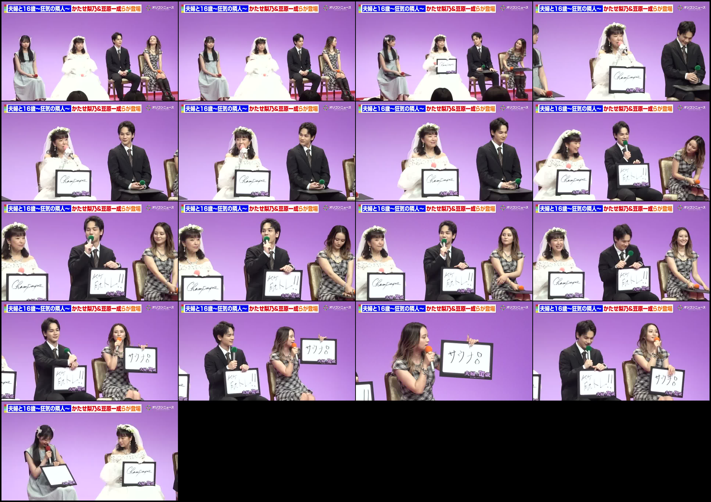
Storyboard frames放大Script / transcript
本作のサブタイトル狂器の臨人にみましてキャストの皆様には狂気的に愛して病止まないものを事前にフリップにお書きいただきました。ということで、今フリップ入れさせていただきますね。そして順番に発表していただければと思います。ではまずは片瀬さんからお願いいたします。
じゃん。
シャンパニ。シャンパンです。シャンパン。
1ヶ月ぐらいお酒を飲んでません。
おお。
何しろ朝が早いのとセリフをいっぱい喋ってるので私はあの
歳のアイドルになったようなスケジュールで、えー、お酒は飲んでませんので、えっとこれが飲める時、え、ま、
ヶ月先ぐらいですか、でもきっとになると思います。
ビッシュビッシュに。はい。
ビッシュビッシュに美味しいでしょうね。
はい。
ありがとうございます。
続いて豆原さんお願いいたします。
僕はもう言わずもガナ。え、筋トレでございますね。筋トレ
[笑い]
もうこうああってなるぐらいあの楽屋でも筋トレの話させてもらってるんですけど、
もう言うことね、もう筋トレ好きなんすよ。
ああ、
もう今日も朝ドラマ撮影あったんですけどで、この会見の合間があって
ジム行ってきたんですよねとか撮影の朝に走ったりとか
もう結構もう狂気的ですね。疲れてても行っちゃいます。
[鼻息]
ええ、
大好きです。
余計疲れないですか?
いや、もう覚醒しちゃいますね。
覚醒するんですね。
はい。よりいいパフォーマンスできる気がします。
はい。[笑い]
ありがとうございます。続いて岡田さんお願いします。
私結構あってお金かしナプシュか。
これで悩みました。普通にシンプルシンプルにサウナ。
はい。サウ
番好感度がちょうどいいサウナにさせていただきます。
確かお金はちょっと気になるけど。
良くないよね。シナプシも寄りすぎてるよね。テレトさんにね。良くないなと思って。はい。
サウナまほんまに好きであのでもま生活スタイルがちょっと変わったのでなかなかいけないんですけど汗かきたいですね。
大好昔からお好きなんですか?
そうですね。もう5年6
年とかになりますね。
サウナーですね。
ね。次行った時きっと気持ちいいでしょうね。
続いては林さんいかがでしょうか?はい。私は食べ物なんですけど知りたい。
川のお寿司。
渋、
渋[笑い]
ねえ。ギャップ愛して山。
そう。お寿司屋さんに行ったら絶対締めは炙りガていうのを決めてるぐらい
かっこいいね。
あのご飯に絡まり合うその縁顔の
乗っかってるじゃなく
口に入れた瞬間にじわっと広がるあの縁顔の
油というか濃厚な感じがすっごく大好きで毎回食べてます。
かなり渋いチョイスですけれども昔から炙り川はお好きなんですか?
そうですね。
そん、あの、小さい頃からっていうわけではないんですけど、あの、逆にそれまで食べたことがなくって、で、炙り川が美味しいよって聞いて、その次の日ぐらいにお寿司屋さんに行って頼んだら、もうこれは目、目が飛び出るぐらいの美味しいなっていう感じが一番好きなネタです。寿司は
がいいね。
いいですね。
炙りがいいですね。炙が、
普通の映画じゃなくて炙りっていうのがいいですよね。ですね。
はい。大人ですね。
はい、ありがとうございます。さ、それではここでフリップを回収させていただきます。
この後は事前に記者の皆様からいただきました質問にお答えいただければと思います。私が大読させていただきます。ここに注目するとよりぞっとするという見所や伏線があれば教えてくださいとのことです。
ここに注目するとよりぞっとする片瀬さんいかがでしょうか?体の力を抜いといてくださ...
Frame OCR / super
[frame_01_001s.jpg]
[eee 168~EROKA~TIST ee ee]
» ps £ 6
1 1 { ( =<:
[frame_02_010s.jpg]
[zee 168~EROR~TIRt ee ee] 7
w 人 い
1 ししかっ
し > dee
[frame_03_020s.jpg]
Re 1 C~TROMA~ Doe ee ee) 2252
4 B
& BS
A a --
[frame_04_030s.jpg]
Rie 1 6ik~TROBA~ DYE Eee)
s
|
[frame_05_040s.jpg]
kee 1 6a~ERORA~ De ee eee)
wie!
4 we
ま RA
~~ hin
[frame_06_050s.jpg]
ET 語族かたせ梨S豆原一成らか登場
” 4
ZS
Bs、 py
[frame_07_060s.jpg]
Rec | Ga~EROMA~ Det ee ee)
= *y
[frame_08_070s.jpg]
[xe 168~ERORA~ Ee
F oh co a os)
みみスッンタグ II 7
14 sit Wie か
[frame_09_080s.jpg]
Rie 1 6iat~EROBA~ かたせ梨7JS豆原一成らが登場計 2
cr い < !
Sea SR
4 (oe Se
gamailiey HE, cs,
[frame_10_090s.jpg]
目夫婦と16歳狂気の隣人ー 2 2 Me i
レン KT) 月 oS
(カタンシック Eif ドルン,、 の i 。
gang a ie at
[frame_11_100s.jpg]
fx8e 1 GR~ERORA~ De WET es
Ve ee?
f | CN ‘Ae SS
x ee
. 2
シクアアンクアンング EIN ee ve es a SM
a RI a
ti | GF WG
[frame_12_110s.jp...キユーピー — 【時報CM】「Everybody Clap」篇／キユーピー＠渋谷スクランブル交差点18:00
2026-07-01 · 30s · 6 frames · local evidence
品牌/生活TVC/CM · frame samplingTVC/CM AdWatch
[frame_01_001s.jpg]
[ iow Bee 3
ae 5
waa ee | &
§ fa / =
oF ‘ Se 。
<
[frame_03_014s.jpg]
を
[frame_04_021s.jpg]
を ot 4 | な |...
觀察重點：先保留 transcript、OCR、storyboard frames，之後再由 Madman/NLM 深挖成 TVC/CM 觀察。
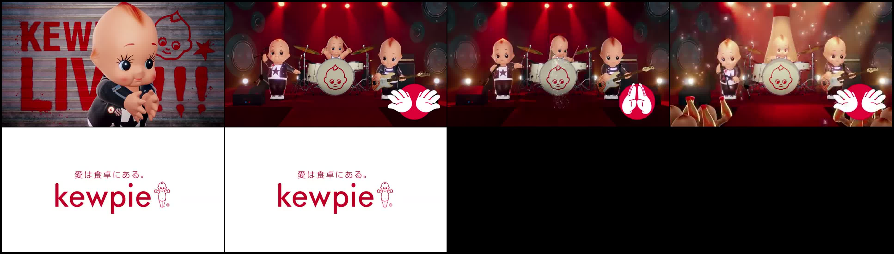
Storyboard frames放大Script / transcript
Frame OCR / super
[frame_01_001s.jpg]
[ iow Bee 3
ae 5
waa ee | &
§ fa / =
oF ‘ Se 。
<
[frame_03_014s.jpg]
を
[frame_04_021s.jpg]
を ot 4 | な |
= soe RS = =
[frame_05_028s.jpg]
愛は食卓にある。
e con
kewpie?
[frame_06_028s.jpg]
愛は食卓にある。
e con
kewpie?
キリンビール / KIRIN BEER — ジョニーウォーカー ブロンド 『Walk Into Magic Hour』篇 15秒
2026-07-01 · 15s · 5 frames · local evidence
品牌/生活TVC/CM · frame samplingTVC/CM AdWatch
ジョニーウォーカーブロンド新[音楽]
登場
ミックスのために生まれたウイスキー
楽しいことは自分で作る
ふわりと開く香りと甘み
ジョニーウォーカーブロンド新登場
觀察重點：先保留 transcript、OCR、storyboard frames，之後再由 Madman/NLM 深挖成 TVC/CM 觀察。
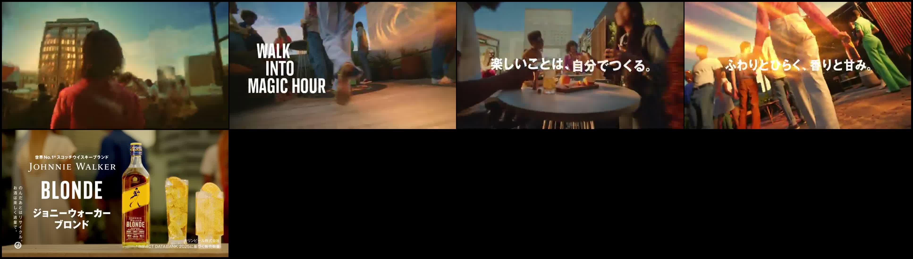
Storyboard frames放大Script / transcript
ジョニーウォーカーブロンド新[音楽]
登場
ミックスのために生まれたウイスキー
楽しいことは自分で作る
ふわりと開く香りと甘み
ジョニーウォーカーブロンド新登場
Frame OCR / super
[frame_01_001s.jpg]
ow
1 wr r
1
[frame_02_004s.jpg]
人
INTO
MAGIC HOUR *
[frame_03_008s.jpg]
A | a
my * f
ww EL » Ve では 自分でつくる。
a 7 こい| =
TE hope
[frame_04_012s.jpg]
い he ~ Weta, NM
[frame_05_013s.jpg]
il =
tHENo.1*299F9424-J5VK =
JOHNNIE WALKER aN
==> =-
おの ゝ
2 BLONDE «# & e:
te : 8
6 ジョニーウォーカー ド を iw
ご ブロンド ps ~ Bie
SUNTORY — 川田将雅騎手×若手トップジョッキー ノンアル座談会！ここでしか聞けないプレミアムトーク
2026-06-28 · 3064s · 17 frames · local evidence
食品/餐飲TVC/CM · frame samplingTVC/CM AdWatch
[frame_01_001s.jpg]
|
サントリー特別配信 邊
超京華!スペシャル座談会 . |
~MBBEXEF by 7 a94—~ アン
sr
| os
ーー |
%
川田 将雅
/ = o ーー
[frame_02_010s.jpg]
1
|...
觀察重點：先保留 transcript、OCR、storyboard frames，之後再由 Madman/NLM 深挖成 TVC/CM 觀察。
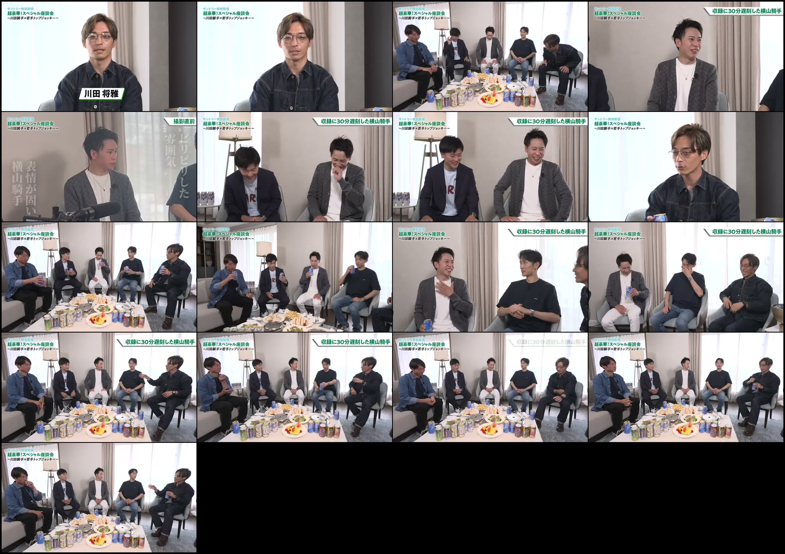
Storyboard frames放大Script / transcript
Frame OCR / super
[frame_01_001s.jpg]
|
サントリー特別配信 邊
超京華!スペシャル座談会 . |
~MBBEXEF by 7 a94—~ アン
sr
| os
ーー |
%
川田 将雅
/ = o ーー
[frame_02_010s.jpg]
1
|
超京華!スペシャル座談会 |
~ MBE XEE bY TI 397 $—~ =)
, ~~
/どさるで iit
*
|||
[frame_03_020s.jpg]
——— Hil
サンドリー特別配信 |
| 超京華!スペシャル座談会 |
| ~MBBEXEF by 7 a7 4—~
4 め 】 1 Li
Tl ie 1 ay DY as me > |
に <あ2 AN ポー パ ト
[frame_04_030s.jpg]
— | 2 |
BRMIZAY+ BAS \ 収録に30分遅刻した横山騎手
~/BFEXEF YAS ay +—~ | ] ーー
[frame_05_040s.jpg]
サン代り后特別配信
#REIZAY + BRS NT
~ BB FXEF by 75 47+ —~ -
= Fe
| | A
ay の)
BA |
=a [a] アラ
が ッ
er
[frame_06_050s.jpg]
1
PEREIRA BRS 収録に30分遅刻した横山騎手
~N/BFXEF by FI ay F—~ |
| |
| =<
bh |
で
1 a
— 2 Wee 、。 中
[frame_07_060s.jpg]
HRI ZA BRS 収録に30分遅刻した横山騎手
~MEBEXEF YT I 39 4—~
: 。
; if a
a 者 y SS
[frame_08_070s.jpg]
|
超豪華!スペシャル座談会
~ MBB EXEF by FI 494 —~
/
x /
N
ai]
——_
[frame_09_080s.jpg]
ー Tih
he bi — 45 BU ice |
| 超京華!スペシャル座談会
| MBB EXE F by FJ ay+—~
| vs =) 7
fe
pe! &...大塚製薬 — 365日、学校の片隅で。｜ちょっとだけ近づく #ポカリ365
2026-06-28 · 9s · 1 frames · local evidence
品牌/生活TVC/CM · frame samplingTVC/CM AdWatch
[frame_01_001s.jpg]
a
= emer
に デ Po ie 7 —
」 ーー ーー
觀察重點：先保留 transcript、OCR、storyboard frames，之後再由 Madman/NLM 深挖成 TVC/CM 觀察。
Script / transcript
Frame OCR / super
[frame_01_001s.jpg]
a
= emer
に デ Po ie 7 —
」 ーー ーー
大塚製薬 — 365日、学校の片隅で。｜球技大会の一日 #ポカリ365
2026-06-28 · 40s · 5 frames · local evidence
品牌/生活TVC/CM · frame samplingTVC/CM AdWatch
休大会頑張るぞ。大会[音楽]
これはひどい。そんなことあるだね。
あ、
觀察重點：先保留 transcript、OCR、storyboard frames，之後再由 Madman/NLM 深挖成 TVC/CM 觀察。
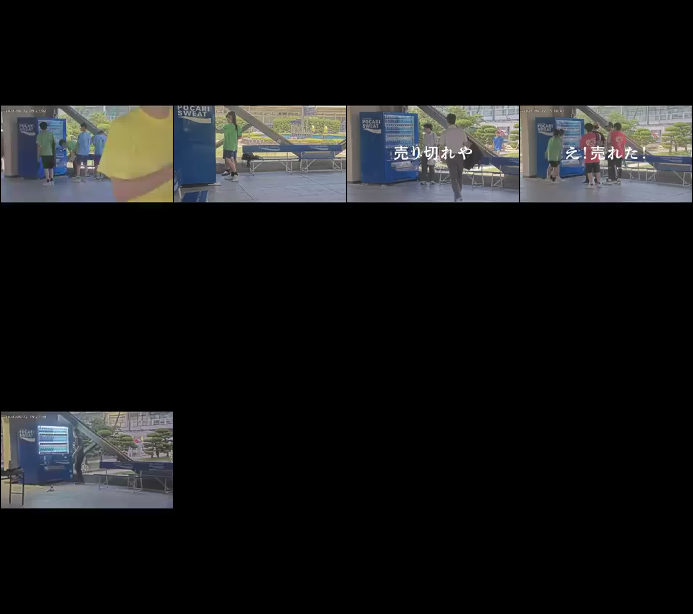
Storyboard frames放大Script / transcript
休大会頑張るぞ。大会[音楽]
これはひどい。そんなことあるだね。
あ、
Frame OCR / super
[frame_02_007s.jpg]
SWE^ T 時 at
. 1
|
チナ コ
#
[frame_04_021s.jpg]
rT - ーー = ae
. as WL ft
[frame_05_028s.jpg]
ーー ーー — iz
|
moviecollectionjp — 【音楽が革命に】アイルランド新世代ミュージシャンたちの叫び／映画『ケルト・ユートピア』特報
2026-06-28 · 120s · 13 frames · local evidence
品牌/生活TVC/CM · frame samplingTVC/CM AdWatch
[frame_02_010s.jpg]
ー - ごミコ >. は > a Serie = se ee
- 国境で南北に分断された島=”
ニニ ete
mw ne fad MAPLE | FN 王
= = ie = = ニー デー — —s
ーーー 本 ーー
————
[frame...
觀察重點：先保留 transcript、OCR、storyboard frames，之後再由 Madman/NLM 深挖成 TVC/CM 觀察。
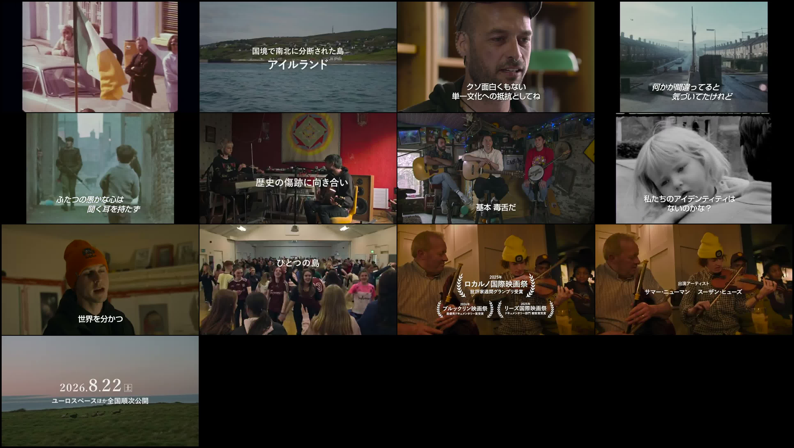
Storyboard frames放大Script / transcript
Frame OCR / super
[frame_02_010s.jpg]
ー - ごミコ >. は > a Serie = se ee
- 国境で南北に分断された島=”
ニニ ete
mw ne fad MAPLE | FN 王
= = ie = = ニー デー — —s
ーーー 本 ーー
————
[frame_03_020s.jpg]
an '
クソ面白くもない
Noe ae
[frame_04_030s.jpg]
| にOTT
Ss 6 ma 』
前
‘ID Diz > TBE e
。。。 =先づてたどなど
[frame_05_040s.jpg]
es =
+ .
_ xyず
だ 者 7
é 」 『
[frame_06_050s.jpg]
a
Td my |
V |
“as 本 し
M = 1 : My
pt e- ーーこせーー _ a «
Sec ーー やへ = 1
礁史の傷跡に向き合い| 、
- rh oe — fi» } :
} i lig tO ~~ 、 」
[frame_07_060s.jpg]
ーーん My アグ/
に | te ン |人
= i ; Bale
ae eed Bei =
[frame_08_070s.jpg]
パ だ
パ -
A
[frame_09_080s.jpg]
|
; d
[frame_10_090s.jpg]
a As 7.
’ N oof Me Ma
y > | wt / is yy
28s aN
[frame_11_100s.jpg]
/ 2025を| いと 1 4
weal レ国際映画祭% =P &
are 間グランプリ受賞 bs いい1
a rose | 2025年
a a cal
1 Re
[frame_12_110s.jpg]
ta +) ie wT ; 2)
; . に 』 LU
コ ン 1
fe
大塚製薬 — 365日、学校の片隅で。｜体育終わりの大繁盛 #ポカリ365
2026-06-27 · 14s · 2 frames · local evidence
品牌/生活TVC/CM · frame samplingTVC/CM AdWatch
[frame_01_001s.jpg]
-
[frame_02_004s.jpg]
-
觀察重點：先保留 transcript、OCR、storyboard frames，之後再由 Madman/NLM 深挖成 TVC/CM 觀察。
Script / transcript
Frame OCR / super
[frame_01_001s.jpg]
-
[frame_02_004s.jpg]
-
moviecollectionjp — 【HANA・NAOKO】ホームシアター楽しみたい！ #HANA #NAOKO
2026-06-27 · 30s · 6 frames · local evidence
品牌/生活TVC/CM · frame samplingTVC/CM AdWatch
LED
小型プロジェクターとロボット掃除機ということで
小型プロジェクターはなぜ選ばれたんですか?今プロジェクター持ってるメンバーが多くてお家に遊びに行った時に
いいなあと思って私もお家すごいことにしようと思いました。
ホームシアターとか楽しみたい感じですか?
うわ、
やりたいですね。
もうなんかあれみたいなとかも心に決めてたりするんですね。
あ、もうめっち...
觀察重點：先保留 transcript、OCR、storyboard frames，之後再由 Madman/NLM 深挖成 TVC/CM 觀察。
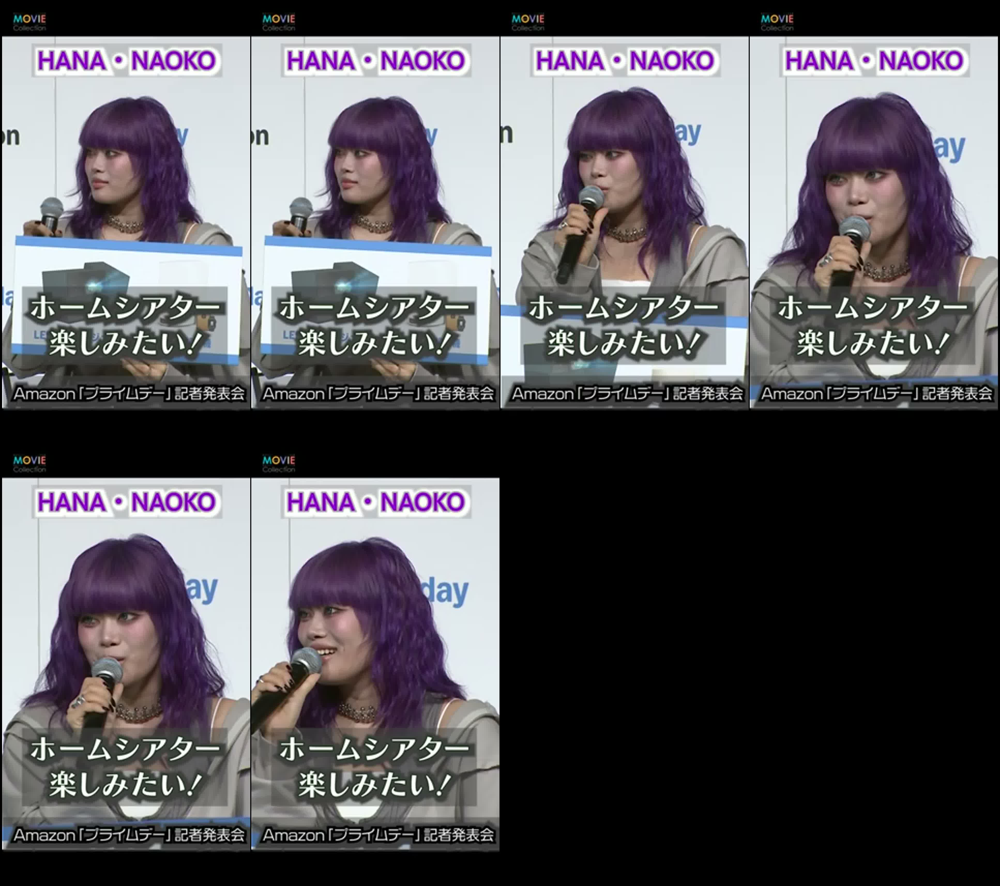
Storyboard frames放大Script / transcript
LED
小型プロジェクターとロボット掃除機ということで
小型プロジェクターはなぜ選ばれたんですか?今プロジェクター持ってるメンバーが多くてお家に遊びに行った時に
いいなあと思って私もお家すごいことにしようと思いました。
ホームシアターとか楽しみたい感じですか?
うわ、
やりたいですね。
もうなんかあれみたいなとかも心に決めてたりするんですね。
あ、もうめっちゃ決めてます。y
Frame OCR / super
[frame_01_001s.jpg]
HANA・ NAOKO
n |
| ee |
ReKURTEVWY,
a. k、) , 笠 a
amazon 「プライハルテー」 記者発表会
[frame_02_004s.jpg]
HANA・ NAOKO
n |
| ee |
ReKURTEVWY,
a. k、) , 笠 a
amazon 「プライハルテー」 記者発表会
[frame_03_008s.jpg]
bah — Ah pa —
EU TE Ae
Amazon 「ブプライリテニ」 記者発表会
[frame_04_012s.jpg]
ホーム ンジルンた /
, BULAeEW! 1
ne j
y Amazon 「ブライハテニ」 記者発表会
[frame_05_016s.jpg]
ホーム ンジルンた /
, BULAeEW! 1
ne j
y Amazon 「ブライハテニ」 記者発表会
[frame_06_020s.jpg]
ae
hho Poe
mm楽げがたい/ q
q Amazon 「ブプライリテニ」 記者発表会
アニプレックス チャンネル — アニメ「リラックマ」#13|※2週間限定配信【7/11(土)23:59まで】
2026-06-27 · 90s · 9 frames · local evidence
品牌/生活TVC/CM · frame samplingTVC/CM AdWatch
イラクマたちどこから行くのかな?あ、小まちゃん。小まちゃんも一緒なんだね。
パスポートもしかして海外旅行?え?リラックマあった。トト行ってらっしゃい。
ただそこにいて君らしまで君の女のです心が温ま
觀察重點：先保留 transcript、OCR、storyboard frames，之後再由 Madman/NLM 深挖成 TVC/CM 觀察。
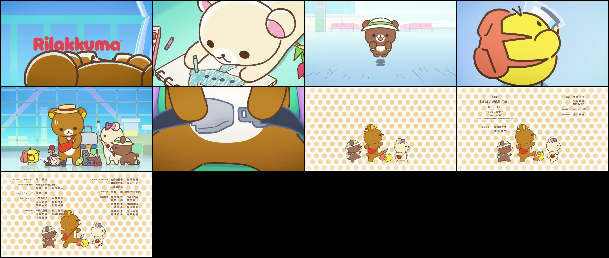
Storyboard frames放大Script / transcript
イラクマたちどこから行くのかな?あ、小まちゃん。小まちゃんも一緒なんだね。
パスポートもしかして海外旅行?え?リラックマあった。トト行ってらっしゃい。
ただそこにいて君らしまで君の女のです心が温ま
Frame OCR / super
[frame_01_001s.jpg]
\
[frame_03_020s.jpg]
FN
©
= &
[frame_04_030s.jpg]
4に
[frame_05_040s.jpg]
—
0 | 」
& fi
プル IN Os
[frame_06_050s.jpg]
| | 』
7 と っ
[frame_07_060s.jpg]
ae
[frame_08_070s.jpg]
=a oe MAA
3 0B ee
[stay with me」 BBa3e
REOS eRe LITYEP
re hae exen 堀口泰史
(Echoes Sony Music Entertainment (Japan) Inc)
=8R8D MRDES
土岐奈々
¢ © ・
4 ie
[frame_09_080s.jpg]
デジタルプロモーション RPMS マーチャンダイジンク.。古用由香 。。 BBs
WEBサイト軸作 Kirksville co.,Itd. RABAT R BT TS
ae © nKMd —aRnn
セールスフランニング SR ロコデザイン 。ョ。草 野 BW epary1yenm
GAS1eyay) WERT Ah 信二人 HERS 井上めぐみ
山内明香 Bee B 柴田 8 Reet
保原由衣 Been 谷 池 fi Roy mAs
uae Bowe
ANGR) SMART Ro AY, DRA 吉田未來
PR HR RSW, ARRE BREE
Nie mS
LS C D)
N
し3 (ey
大塚製薬 — 365日、学校の片隅で。｜女子高生の会話の沼 #ポカリ365
2026-06-27 · 26s · 6 frames · local evidence
品牌/生活TVC/CM · frame samplingTVC/CM AdWatch
情けなって何使いやね。けなくないけない。普通に会社なんか口なけどこうやってきない。え、これけない。
Bra
觀察重點：先保留 transcript、OCR、storyboard frames，之後再由 Madman/NLM 深挖成 TVC/CM 觀察。
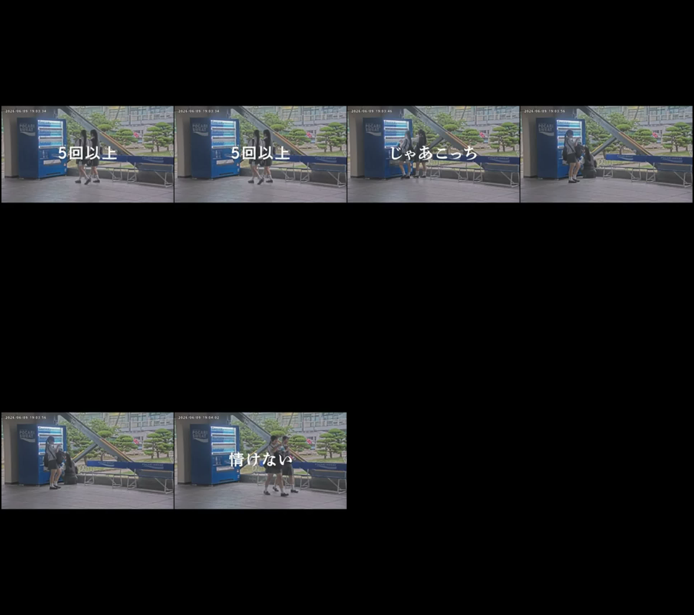
Storyboard frames放大Script / transcript
情けなって何使いやね。けなくないけない。普通に会社なんか口なけどこうやってきない。え、これけない。
Bra
Frame OCR / super
[frame_03_008s.jpg]
0 fr
—— ih, デー ー 7 ーーーーーー-
に My Si =" in Mk ーーーー」
[frame_06_020s.jpg]
aan se ここ
. Im
にまで , ; ¥
: シレ tc “
. 上 r
] —- =e
ーー
® ー . もと _ NU
' | ms #ペー
も ~~
SUNTORY / のんある酒場 — のんある酒場『居酒屋客のマインドでスーパーに来たらマリアージュした男』篇 1分19秒 レインボー ジャンボたかお サントリー
2026-06-26 · 80s · 13 frames · local evidence
食品/餐飲實拍 · 場景錯位 · food pairingTVC/CM AdWatch
由日常飲食場景切入，把 non-alcohol 產品放入居酒屋/小食 pairing 情境，降低「無酒精」的理性距離。
觀察重點：功能型產品可借飲食場景重新定位，讓觀眾先想起使用時刻，再接受產品。
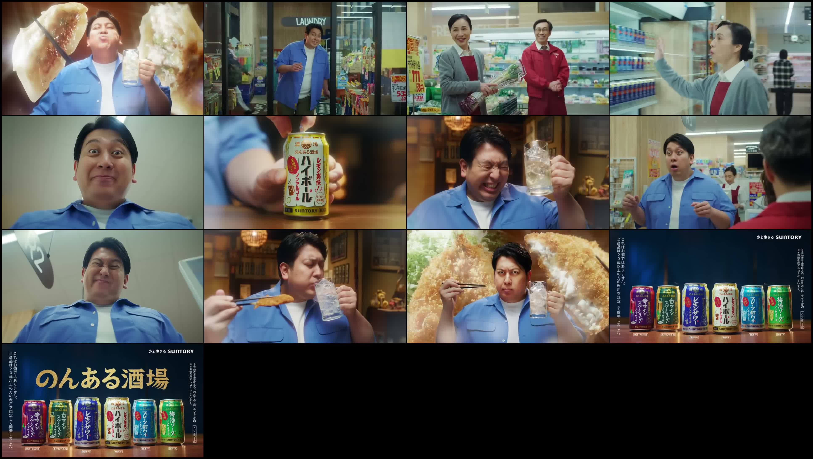
Storyboard frames放大Script / transcript
どせ大将やってる。
今日も来ちゃったよ。
1名様毎
あら、カウンター開いてるわよ。
今日また休刊日なんだよね。
お任せなよ。
いい餃子が入ってんだ。
餃子に合うノンある酒場はハイボール。
踊ルキープ。どうもね。
これ[荒い息]
はい、モゾ入ります。
妄想
いただきます。ハイボールの爽やかな炭酸が餃子のパンチある旨みを最高に引き立ててマリア。
はい、マリアだきました。[音楽]
マリア。
はい、続いてアジフライとレモンサワーでどうだ?
はい、そり。
はい、さんです。
アブライの衣の油をレモンサーの酸味がさっぱりさせてくれて
マリアージュ[音楽]
うまそうすぎる。
酒から作ってるからつもの相飯に合う。サントリーノンアル酒。
あ。
Frame OCR / super
[frame_01_001s.jpg]
|
“4h
fa ‘
[frame_02_007s.jpg]
| >
LAUNDRY ="
tat
su sos) Ser
[frame_03_014s.jpg]
, iz
- a f MT W ' y 時
人 ee ーーご
[frame_04_021s.jpg]
> - ーッ 5 a
ni os | =
Tre 同 ” と = ーー
ーー ™ 2
ae! £1
Pa |
[frame_05_028s.jpg]
(3
人 ]
、
a
[frame_06_035s.jpg]
ag へ
則っんある洒
Ql\\ 4
| を
ps Ho \/ 5
19 i Wy oe
7 = =
[frame_10_063s.jpg]
し
[frame_11_070s.jpg]
~ ‘ gy
[frame_12_077s.jpg]
当こ 水と生きる SUNTORY
商れ
xs
2 酒 aE
0で ae
歳は Be
上 に 本 | ] ee ih の 4
i hs welbe TOPE Ee Gs.
中 pee Wea Ae イイ | An J 6
x リン2 Ya a) he vel 4 |
=o sun’ ee: im” ae = 敵 Yee suntor * sun ii
ーー un sum 4
aa
5 J 7
© J
[frame_13_077s.jpg]
きも 水と生きる SUNTORY
れ
品は
はお ‘x
28 a = 7.) af
のま i ンン/ 18
eee ti Te £ —_ いだ
想 | ae & リン a 中 viel a * 2
Nat eenbee [ODP Pe ie .
ele be WN? | Ree eC:
_ た oy - ーーー os YY
= ae =
SUNTORY / CRAFT BOSS — クラフトボス 世界のTEA『人生変わるかも？インドトレイン』篇 42秒 とにかく明るい安村 サントリー
2026-06-26 · 43s · 7 frames · local evidence
食品/餐飲實拍 · 假體驗證言 · 異國 visual deviceTVC/CM AdWatch
把飲品 launch 包成一程「印度列車」體驗，用乘客證言同異國 visual 去放大一句「人生可能會變」。
觀察重點：普通產品賣點可以變成可感受的假體驗，再用 testimonial 格式令荒謬感變可信。
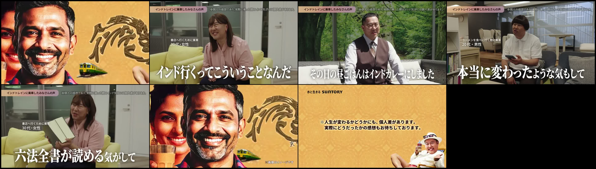
Storyboard frames放大Script / transcript
夜だけでインド気分になれる電車が登場。
インド行くってこういうことなんだなって。
窓の外ここインドなのって思っちゃうぐらい本当にインド行った気分になれるんですよ。その日の昼ご飯はインドカレーにしました。インド行くと人生変わるって言うじゃないですか。本当に変わったような気もして。爪を切る最適なタイミングが分かった気します。人生変わったってことですかね。
六書がなんだか読める気がして読んでないんですけど。
世界のTプレゼンツ人生変わるかも。
インドトレイン気分だけでもバケ
Frame OCR / super
[frame_01_001s.jpg]
F ( に : We
[frame_02_007s.jpg]
ーー eee | ae
インドトレインに乗車したみなさんの声 ※個の感想であり実際に条 だ際の GF ETI Asc Odo
rl 1
a e
ーーニー ーー ト
書店へ行くために生還
4
«a =
$i > a > Ape レバ
4 J 3 3 44
a’ @) ー
[frame_03_014s.jpg]
インドトレインに乗車したみなさんの声 BETTI ce Wes ee Sep ee Ie on ee
M
= N
y .,
[frame_04_021s.jpg]
SSE ーー ———<——
インドトレインに乗車したみなさんの声 MEIION une ae f= ih PAS ONES DES |
<」 Dhaest 1
OK BE -_ us’
— ョーー | | =
[frame_05_028s.jpg]
インドトレインに乗車したみなさんの声 | ECGVNO tne ee ts aie SOV RAVE ates
bs ~ 2
=~ |た oe al
に、
|
書店へ行くために乗 M >
30代・女性 ん
| an FT /
ー - = デ
“_h Vi == ». Ap ww
~~ / | ya =! yas 7 2 で 】 a
_ - —
[frame_06_035s.jpg]
ae y =) 4 8
« ) / | 8 e Ik GRR APE th
[frame_07_040s.jpg]
水と生きる SUNTORY
※人生が変わるかどうかにも、個人差があります。
実際にどうだったかの感想もお待ちしております。Honda / CIVIC — 【CIVIC】プロがこだわる「いい道具」に共通するものとは｜岩井明愛×岩井千怜×中野信治インプレッション動画 Short Ver.
2026-06-25 · 30s · 6 frames · local evidence
汽車/交通實拍 · 產品體驗 · 名人/專業人士試用TVC/CM AdWatch
用試乘者的手感、聲音、安心感去講車，不硬 sell 規格，而是把產品賣點轉成駕駛體驗。
觀察重點：汽車片未必要先講 spec；有 credibility 的用家視角，可以把性能變成情緒。
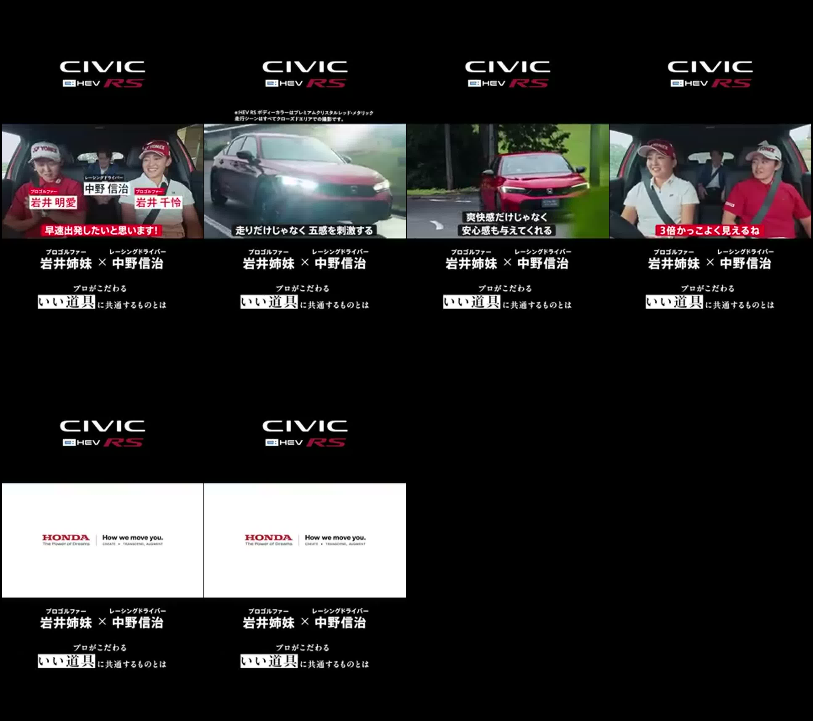
Storyboard frames放大Script / transcript
早速出発したいと思います。
この音いですね。
いや、気持ちいいですね。足だけではなくて本当互感を刺撃するで分かるかな?今の速さとか
やっぱり気持ちが高ぶりますね。乗って楽しいです。
総会感だけじゃなくて安心感も与えてくれるんですよね。
安心感。
これの運転してる人
3倍かっこよく見えない。
間違いない。これはたまらない。
[笑い]
Frame OCR / super
[frame_01_001s.jpg]
CIiVic
Grey |
a ゃ ・
に > J | N
1 シーシンダチライバー 1
中野 信治
プロゴルファー レーシングドライバー
岩井姉妹 < 中野信治
プロがこだわる
いい道上 半生えの
[frame_02_007s.jpg]
CiiiVic
Grey
GHEY RS ディーカラーはプレミアムクリスタルレッド・ナタリッケ
代行シーンほすべてクローズドエリアでのみ性動です。
ーーエーーー
j
ES
NN ceなく aeennss 還較
プロゴルファー レーシングドライバー
岩井姉妹 < 中野信治
プロがこだわる
いい道上 問生のり
[frame_03_014s.jpg]
CiiVic
rev |
[ が >
- oe =
PERRET CPS
安心感も与えてくれる
プロゴルファー レーシングドライバー
岩井姉妹 < 中野信治
プロがこだわる
RB 全1
[frame_04_021s.jpg]
Civic
GAHev
f, 』 y
4 t
~ le
プロゴルファー レーシングドライバー
岩井姉妹 < 中野信治
プロがこだわる
いい道上 - wrscorn
[frame_05_028s.jpg]
CIVIC
Garev
プロゴルファー レーシングドライバー
岩井姉妹 < 中野信治
プロがこだわる
いい迫 -tutstoLn
[frame_06_028s.jpg]
CIVIC
Garev
プロゴルファー レーシングドライバー
岩井姉妹 < 中野信治
プロがこだわる
いい迫 -tutstoLn